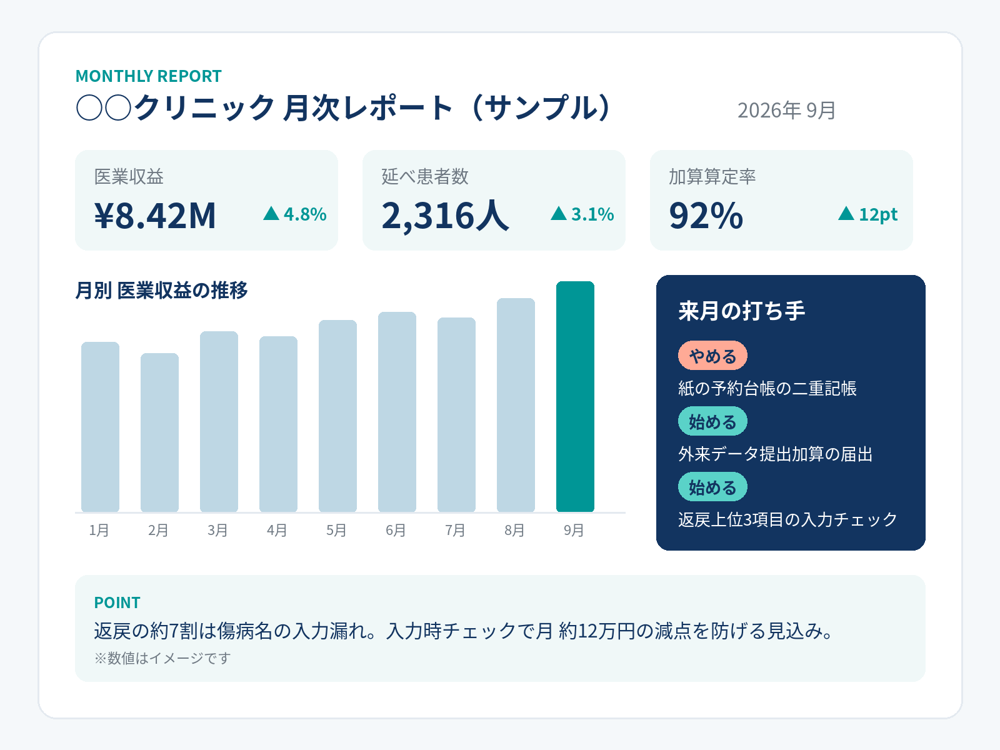

AI検索対策（GEO）
ChatGPT や Google の AI による概要などで、院がどう紹介されているかを計測します。誤った情報や伝わっていない診療内容を見つけ、改善して、再計測の結果をご報告します。
AI検索対策（GEO）・データ提出加算・再診患者の離脱対策。院の実務に合わせて、一緒に進めます。
電子カルテ導入150院以上の経験をもつ現役事務長

ChatGPT や Google の AI による概要などで、院がどう紹介されているかを計測します。誤った情報や伝わっていない診療内容を見つけ、改善して、再計測の結果をご報告します。
届出の準備から毎回の提出データの作成・提出までを代行します。提出期限と様式の違いは、データ提出加算の提出期限で整理しています。
再診が途切れた患者さんをデータから把握できるようにし、次回予約の取り方や受診のご案内の仕組みを、院の運用に合わせて整えます。
経営・運営のご相談、マニュアル作成、売上分析・返戻査定分析もあわせてお受けしています。料金表を見る →
新しい患者さんに見つけてもらう。取れる加算を確実に算定する。通院を続けてもらう。3つの柱を院の実務に合わせて進め、売上につながる状態づくりを支援します。
AI検索対策（GEO）で、新しい患者さんに見つけてもらう
データ提出加算で、取れる加算を確実に算定する
再診患者の離脱対策で、通院を続けてもらう
売上の金額や増加率をお約束するものではありません。毎月の数字を一緒に見ながら、次に何をやるかを決めていきます。
150院以上
電子カルテ導入支援
800件超
査定・返戻の分析
エラーゼロ
外来データ提出加算・約680名分の提出を代行
AIに院のことを聞くと、診療内容や院の情報が正しく伝わっていない
データ提出加算を取りたいが、毎回の提出作業で止まっている
再診が途切れた患者さんに、気づく仕組みがない
査定・返戻の分析
800件超
約2年分・800件超の査定・返戻を分析し、防げた減点を特定（約7割が傷病名の入力漏れ）。
外来データ提出加算
約680名分
外来データ提出加算の試行データ（約680名分）の作成・提出を代行。エラーゼロで提出・合格。内科・別レセコン環境の他院でも提出まで対応。
「AI検索で院がどう出ているか知りたい」「加算の提出が負担」など、今いちばん気になっていることを1つ聞かせてください。